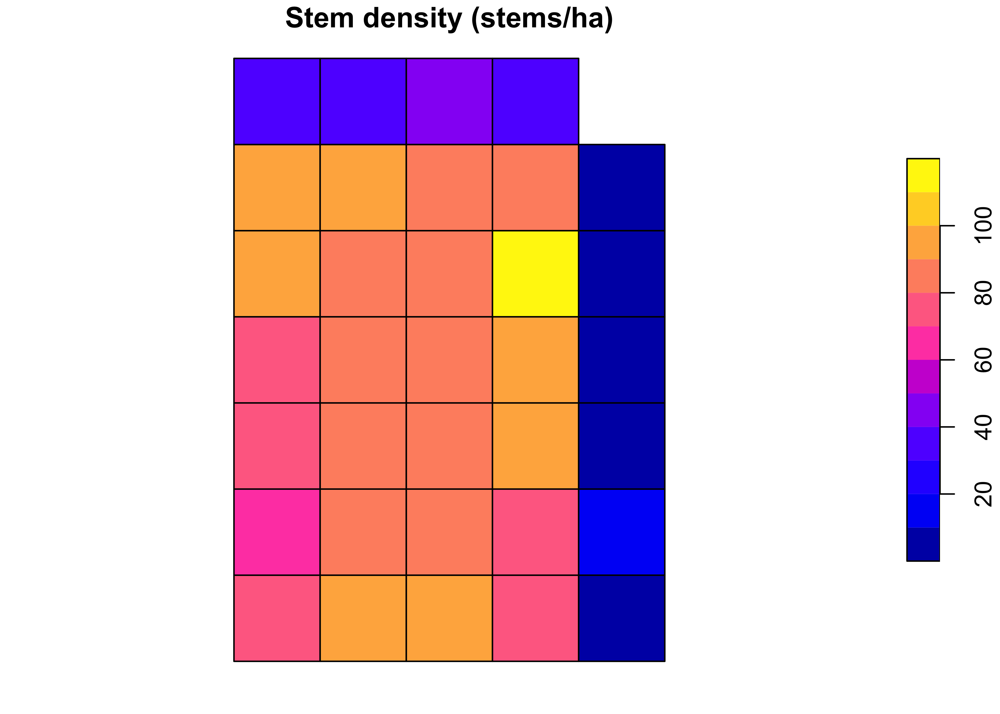

2 Vector Data
2.1 Geometry types
Vector data represent the world as discrete shapes. The simple-features standard, which sf implements, defines a small family of geometry types built from coordinates: a point is a single location, a linestring an ordered path, a polygon an enclosed area, and each has a multi form for features made of several parts. Almost everything an auditor handles is one of these: stems and plot centres are points, streams and roads are lines, stands and ownership parcels are polygons.
Every metric operation, area, distance, overlap, is meaningless on longitude and latitude, because a degree is not a fixed length. So the first move in vector analysis is to project to a coordinate system whose units are metres. For this plot in Virginia that is UTM zone 17 North, EPSG 32617:
stems <- st_transform(stems, 32617)
st_bbox(stems) # now in metres
#> xmin ymin xmax ymax
#> 747559.3 4308835.3 747976.6 4309480.12.2 sf anatomy
An sf object is a table whose rows are features and whose last column, of class sfc, holds the geometry. Because it is a data frame first and spatial second, the whole dplyr grammar applies and the geometry is carried along automatically:
stems |>
filter(dbh >= 30) |>
mutate(basal_area_cm2 = pi * (dbh / 2)^2) |>
select(treeID, genus, dbh, basal_area_cm2) |>
head()
#> Simple feature collection with 6 features and 4 fields
#> Geometry type: POINT
#> Dimension: XY
#> Bounding box: xmin: 747567.3 ymin: 4308977 xmax: 747908.4 ymax: 4309385
#> Projected CRS: WGS 84 / UTM zone 17N
#> treeID genus dbh basal_area_cm2 geometry
#> 1 1139 Acer 44.0 1520.5308 POINT (747859.4 4309329)
#> 2 2436 Acer 37.4 1098.5835 POINT (747648.9 4309107)
#> 3 1134 Acer 60.0 2827.4334 POINT (747588.6 4308977)
#> 4 1031 Acer 42.5 1418.6254 POINT (747567.3 4309385)
#> 5 3800 Acer 33.2 865.6973 POINT (747908.4 4309047)
#> 6 29 Acer 32.6 834.6898 POINT (747905.6 4309230)st_drop_geometry() turns the layer back into an ordinary table when you want a plain summary, and st_geometry() extracts just the shapes when you want to plot outlines with no attribute shading.
2.3 Building polygons
Analysis usually needs areas, not just points. We divide the plot into 100-metre quadrats with st_make_grid(), the standard way to impose a regular sampling frame, and keep only the cells that cover the stems:
grid <- st_make_grid(stems, cellsize = 100) |> st_as_sf()
grid$quadrat <- seq_len(nrow(grid))
grid <- grid[lengths(st_intersects(grid, stems)) > 0, ]
nrow(grid)
#> [1] 342.4 Spatial joins
A spatial join attaches attributes by location rather than by a shared key. st_join() labels each stem with the quadrat that contains it, after which the counting is ordinary dplyr:
stems_q <- st_join(stems, grid, join = st_within)
per_quadrat <- stems_q |>
st_drop_geometry() |>
group_by(quadrat) |>
summarise(n_stems = n(),
mean_dbh = round(mean(dbh), 1))
head(per_quadrat)
#> # A tibble: 6 × 3
#> quadrat n_stems mean_dbh
#> <int> <int> <dbl>
#> 1 1 80 5.8
#> 2 2 100 4.8
#> 3 3 98 4
#> 4 4 76 6.6
#> 5 5 9 2
#> 6 6 62 7.4This point-in-polygon join is the workhorse of inventory: it is how you assign field stems to strata, plots to ownership parcels, or detections to management units.
2.5 Support
An attribute value stands in a particular relationship to the geometry it is attached to, and getting that relationship wrong is one of the most common and least visible errors in spatial analysis. The support of an attribute is the area over which it was measured or to which it applies. A stem count has each quadrat as its support; a per-hectare density refers to a hectare. Two numbers can look identical yet mean different things because their support differs.
Attributes divide into two kinds by how they behave when a geometry changes size. An extensive attribute is a total that scales with area, a count of stems or a tonnage of carbon; split a polygon and the value divides between the pieces. An intensive attribute is a rate or density that does not scale, stems per hectare or mean diameter; split the polygon and each piece keeps the value. The distinction dictates how you aggregate: sum the extensive total, average the intensive rate.
grid_join <- left_join(grid, per_quadrat, by = "quadrat")
grid_join$area_ha <- as.numeric(st_area(grid_join)) / 1e4 # support, in ha
grid_join$stems_ha <- grid_join$n_stems / grid_join$area_ha # intensive
# extensive -> sum; intensive -> area-weighted mean
c(total_stems = sum(grid_join$n_stems),
mean_density = round(weighted.mean(grid_join$stems_ha, grid_join$area_ha), 0))
#> total_stems mean_density
#> 2285 67Summing a density, or averaging a total, is simply wrong, and it is exactly how reported area totals silently inflate. Always be able to state the support of a number, and never combine values of different support without an explicit rule.
plot(grid_join["stems_ha"], main = "Stem density (stems/ha)")
2.6 Keystone: area checks
The applied heart of vector GIS in verification work is the area check: confirming that the area a project claims matches the area its geometry actually encloses, and that its parcels do not overlap or leave gaps. Overstated area is overstated crediting, so this is often the first quantitative finding in an audit. The tools are exactly those above, st_area, st_is_valid, st_intersection, applied to the project’s own polygons.
We stand in for the project boundary with the plot’s nominal extent and check it against the mapped stems. First, geometry validity, because area and overlap operations on an invalid polygon return nonsense:
boundary <- st_as_sfc(st_bbox(stems)) |> st_sf(id = "claimed_boundary")
all(st_is_valid(boundary))
#> [1] TRUENow the area reconciliation. A claimed area is compared with the geometry’s measured area; the auditor reports the difference:
claimed_ha <- 25.6 # nominal 400 x 640 m plot
measured_ha <- as.numeric(st_area(boundary)) / 1e4
data.frame(
claimed_ha = claimed_ha,
measured_ha = round(measured_ha, 2),
difference_ha = round(measured_ha - claimed_ha, 2),
pct_error = round(100 * (measured_ha - claimed_ha) / claimed_ha, 1)
)
#> claimed_ha measured_ha difference_ha pct_error
#> 1 25.6 26.9 1.3 5.1Finally, overlap detection between parcels. Where two subareas are submitted, their intersection must be empty; any positive intersection area is double-counted land:
a <- st_as_sfc(st_bbox(c(xmin = 747000, xmax = 747250,
ymin = 4306000, ymax = 4306400), crs = 32617))
b <- st_as_sfc(st_bbox(c(xmin = 747200, xmax = 747450,
ymin = 4306000, ymax = 4306400), crs = 32617))
overlap <- st_intersection(a, b)
as.numeric(st_area(overlap)) / 1e4 # hectares of double-counted area
#> [1] 2A non-zero result is a finding: those hectares are claimed twice and must be reconciled before any area total is accepted. The full project workflow layers on shapefile ingest, coordinate-system checks, and a written report, but the logic is this: validate the geometry, measure the area, compare to the claim, and test every parcel pair for overlap.
2.7 Exercises
- Project the stems to UTM 17N and build a 50-metre quadrat grid. How many quadrats cover the plot, and how does the mean stem count per quadrat change from the 100-metre version? Relate this to support.
- Classify
n_stemsandstems_haas extensive or intensive, and state which should be summed and which averaged when quadrats are merged into blocks. - Take the
claimed_haof 25.6 and imagine the true mapped boundary were 5% smaller. Compute the over-crediting in hectares and explain why an auditor treats positive area error differently from negative. -
(Applied.) Two submitted parcels overlap by 3 ha out of a claimed 40 ha total. Write the
st_intersectionandst_areacalls that quantify the overlap, and state the corrected non-overlapping total.